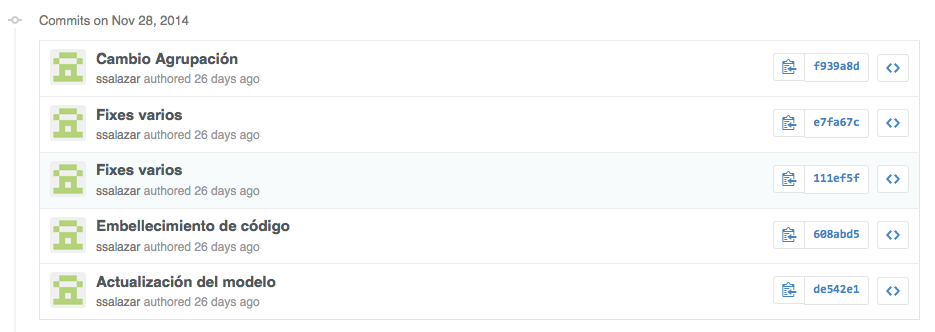
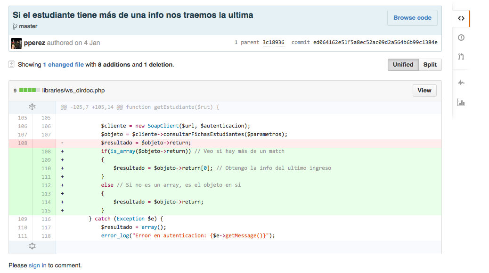
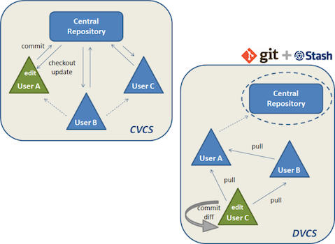

Un VCS (Version Control System) registra los cambios realizados a su proyecto, permitiendo volver a versiones especificas a lo largo del tiempo.
Características
Revertir un fichero o todos a una revisión específica.
Realizar una comparación entre dos revisiones.
Conocer quien ha realizado cambios (problemáticos) sobre un fichero en particular.
Cuando se introdujo un bug (o feature) al proyecto.
Tipos de VCS
Tipos de VCS
Existen tres tipos de VCS:
Locales
Son los abuelitos de los VCS, mantienen una base de datos local con todos los registros, no hay una forma sencilla de tener colaboración con más gente.
La necesidad de colaborar fue la que requirió la transición hacia un CVCS (Centralized Version Control System), estos muestran un servidor único que contiene todos los ficheros versionados, y multiples clientes que piden ficheros desde este.
Estos problemas llevaron a pensar un nuevo tipo de VCS, los DVCS (Distributed Version Control System), estos difieren en los centralizados en que los clientes guardan la copia completa del repositorio.
Git es un sistema de control de versiones distribuido, usualmente un proveedor de la parte centralizada es github, no hay que confundirlos.
Commits
Ver un diff
Es distribuido
CVCS vs DVCS
Si se cae el servidor de github (Repositorio central en la imagen), aún pueden trabajar, hacer commits, consultar el log, crear branches (locales), y otras operaciones.
(Ojo! Github no es el único proveedor de git, está bitbucket y otros, incluso pueden alojarlo en un servidor propio, it's free!).
Instalando git
Crear la cuenta y configurar identidad
El primer paso sería entrar a github y crear una cuenta
Ahora debemos crear una llave ssh (Abran sus terminales y tipeen):